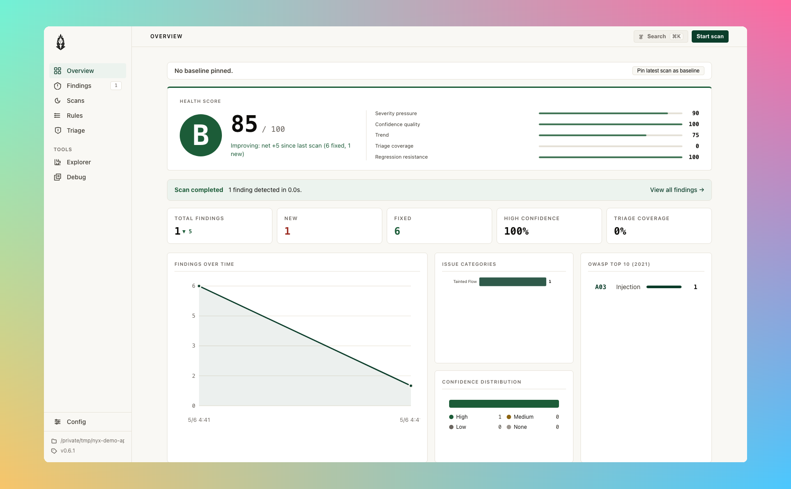
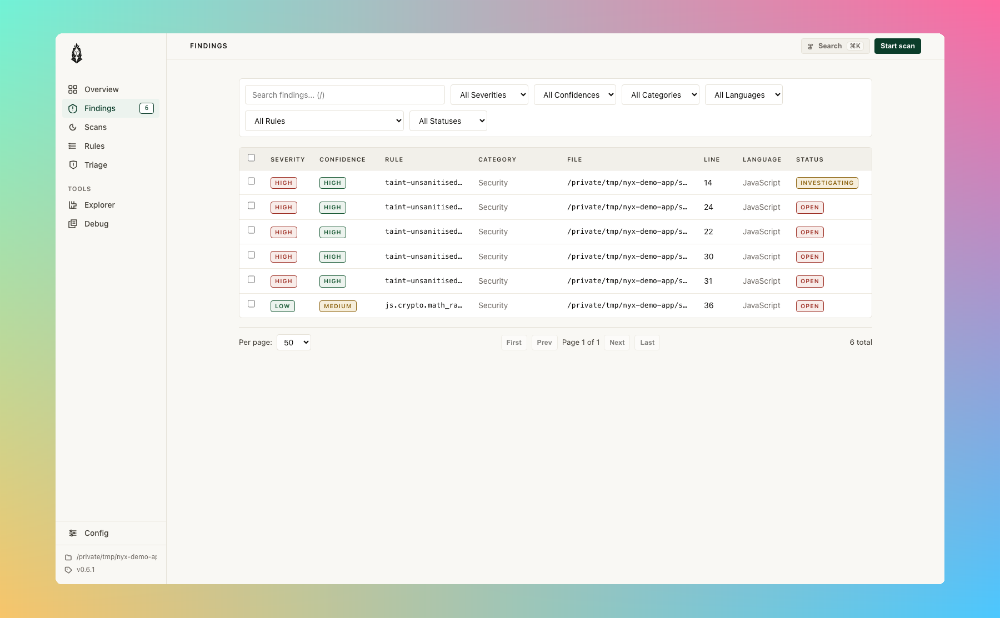
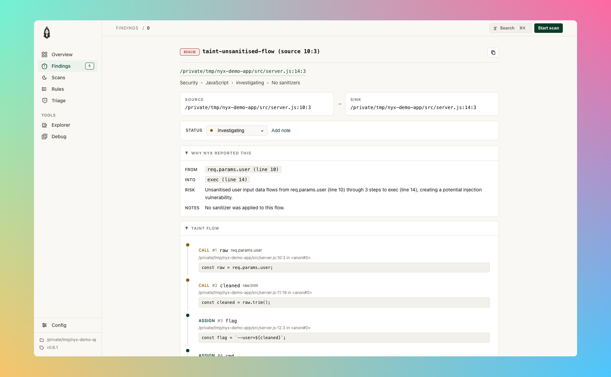
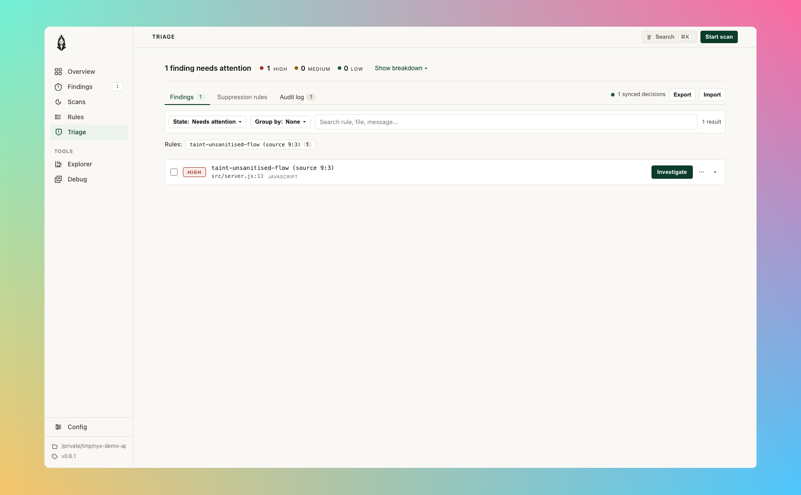
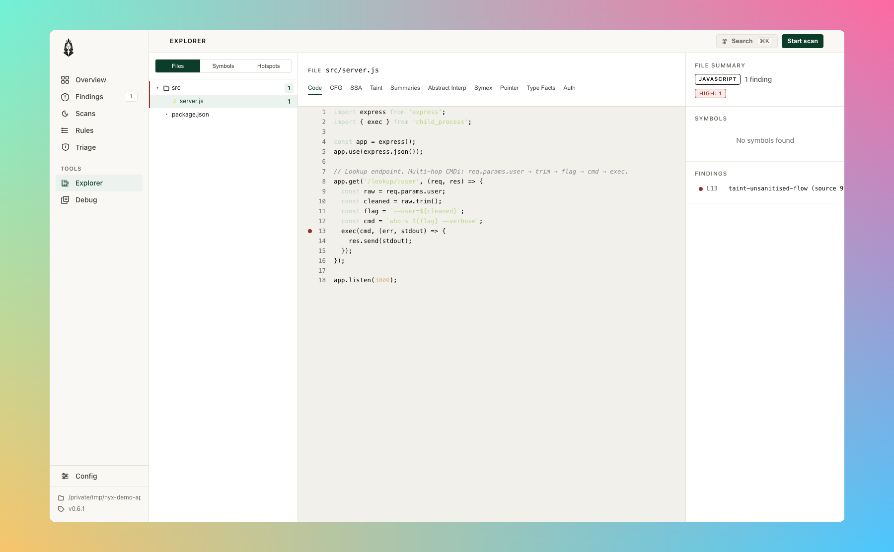
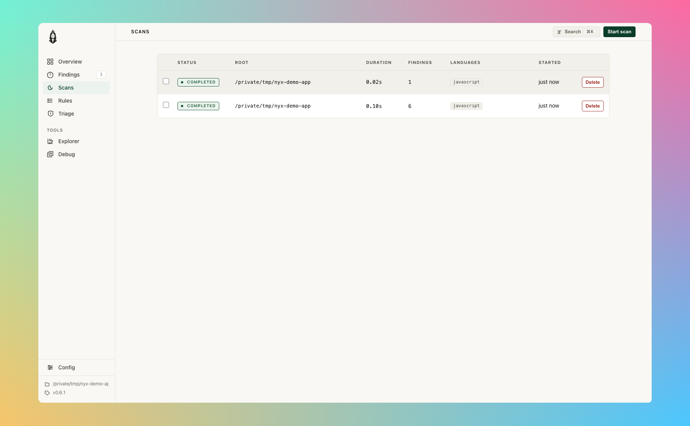
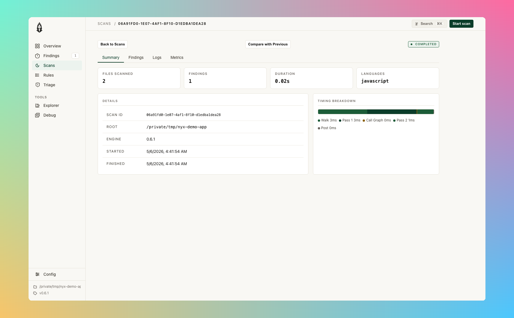
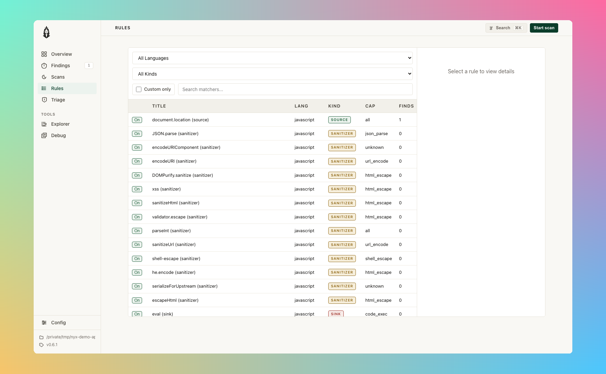

#nyx serve: the browser UI
The CLI is fine for CI. For triage, you want context: the source snippet, the dataflow path, the history of how a finding has moved across scans, and a place to record decisions that survive the next run. nyx serve boots a local React UI bound to loopback.
nyx serve # opens http://localhost:9700 in your default browser
nyx serve ./my-project # serve a specific project root
nyx serve --port 9750 # override port
nyx serve --no-browser # don't auto-openPersistent settings live under [server] in nyx.conf / nyx.local.
Starting a scan from the UI runs dynamic verification on Confidence >= Medium
findings by default. Check "Skip dynamic verification" in the scan modal to get
a fast static-only result. See Dynamic verification for details.

#What it serves, and what it doesn't
The frontend is built and embedded into the nyx binary at compile time. There's no separate install step, and the binary serves the entire UI from memory; nothing is fetched from a CDN. The UI talks to the local Nyx process over a small JSON API.
There is no account, no telemetry, no remote logging, no auto-update ping. The data the UI shows is the data on your disk: the SQLite project index plus .nyx/triage.json.
#Security model
nyx serve enforces three things:
- Loopback bind only.
--hostand[server].hostare clamped to127.0.0.1,localhost, or::1. Any other value is refused at startup withNyx serve only binds to loopback addresses; refused host '<value>'(src/commands/serve.rs). - Host-header check. Every request must carry a
Hostheader that matches the bound address and port. Missing or mismatched headers get a400 invalid Host header. Defends against DNS rebinding (src/server/security.rs). - CSRF on mutations.
POST/PUT/PATCH/DELETErequests must carry a per-process CSRF token in thex-nyx-csrfheader. The token is generated once when the server starts and exposed atGET /api/healthso the embedded SPA can read it. Cross-origin mutations are rejected before the CSRF check via theOriginheader.
If you forward the port over SSH or expose it through a reverse proxy, the host-header check will reject the request because the Host won't match localhost:9700. That's the intended behaviour. Don't do this without a deliberate reason; the loopback bind is part of the security model.
#The pages
| Path | Page |
|---|---|
/ |
Overview |
/findings |
Findings list |
/findings/:id |
Finding detail |
/triage |
Triage |
/explorer |
Explorer |
/scans |
Scans |
/scans/:id |
Scan detail and compare |
/rules |
Rules |
/rules/:id |
Rule detail |
/config |
Config |
The numeric :id for finding URLs is the position index in the current scan, not a stable fingerprint. Bookmarks across scans aren't reliable; rely on file path + line.
#Overview and Health Score
The overview is the landing page after a scan. Severity counts, top affected files, OWASP coverage, and a 0 to 100 Health Score with a letter grade.
#How the Health Score is calculated
Two things drive the score. The density of risk in the codebase, and hard guardrails that decide what the grade can mean.
Each finding contributes weight = severity_base × confidence_factor × verdict_factor × context_factor:
- Severity base: HIGH 10, MEDIUM 3, LOW (security) 0.5
- Confidence: High 1.0, Medium 0.6, Low 0.3
- Symex verdict: Confirmed 1.2, NotAttempted 1.0, Inconclusive 0.7, Infeasible 0.1
- Context: cross-file taint flow 1.15, intra-file flow 1.0, AST-only or no flow 0.75, test path 0.3
Quality lints (rule IDs containing .quality.) skip the per-finding weight and instead apply a saturating drag, capped at 15 points (so 1000 unwrap lints don't grade worse than 300 do). Total weight gets divided by sqrt(files / 100), clamped between 1 and roughly 22, so a 100-file repo and a 50000-file repo see different denominators but a monorepo can't dilute its way out of a real HIGH.
The result feeds a log curve into a 0 to 100 base, minus the quality drag. Then HIGH guardrails apply, keyed on the credibility-adjusted HIGH count rather than the raw count:
| effective HIGH | ceiling |
|---|---|
| 0 | 100 |
| 1 | 85 |
| 2 | 78 |
| 3 to 5 | 68 |
| 6 to 10 | 58 |
| 11+ | 45 |
A repo with zero effective HIGHs never grades below C 70. That floor is the structural promise that the score isn't an automated F-machine for projects that have lots of LOW noise but no critical issues.
Modifiers in the ±5 range nudge the result for trend (only after the second scan), triage coverage (only when total findings ≥ 20), reintroduced findings, and stale HIGHs more than 30 days old.
#What the score doesn't measure
It's a Nyx-finding-pressure metric, not a security audit. Score 100 means Nyx didn't find anything under its current rules and language coverage; it doesn't certify the absence of vulnerabilities. The score doesn't see runtime config, IAM, secret stores, dependency CVEs, or anything outside the source tree being scanned. A repo of mostly Kotlin (where Nyx coverage is thin) will score artificially well because most of the code never gets evaluated.
Ceilings are calibrated for the current scanner false-positive rates. As symex coverage and rule precision improve, the ceilings may tighten.
#Findings and Finding detail
The findings list is filterable by severity, confidence, category, language, rule ID, and triage state.

Clicking through opens the flow visualiser: a numbered walk from source to sink with the snippet at each step, cross-file markers when the path leaves the current file, the rule's "How to fix" guidance, and the engine's evidence object inline.

Engine notes call out when precision was bounded for that finding (OriginsTruncated, PointsToTruncated, WorklistCapped, PredicateStateWidened, SsaLoweringBailed, etc.). Each note carries a direction tag: under-report means the emitted flow is real and the result set is a lower bound; over-report means widening dropped a guard; bail means analysis aborted before producing a trustworthy result. --require-converged in the CLI drops over-report and bail notes for strict gates.
#Triage
Each finding carries a triage state: open, investigating, false_positive, accepted_risk, suppressed, or fixed. The triage page bulk-updates them and shows the audit trail.

State writes are persisted to SQLite immediately, and (when [server].triage_sync = true, default on) mirrored to .nyx/triage.json in the project root. Commit that file:
git add .nyx/triage.jsonIt carries decisions across machines so a teammate's local scan reflects yours. The format is documented in src/server/triage_sync.rs; the schema is stable and round-trip-safe with nyx serve re-imports.
#Explorer
A file tree with per-file finding counts, syntax-highlighted source, and a right rail with the file's symbols and findings. Useful for "what's wrong with this module" rather than "what's wrong with this finding".

The path query string preselects a file: /explorer?file=src/handler.rs.
#Scans and compare
Past runs are persisted when [runs].persist = true (off by default to avoid disk growth on heavy users). When persistence is on, /scans lists historical runs.

Each run drills into a detail page with files scanned, findings count, duration, languages, and a per-pass timing breakdown.

Pick two scans to diff and see what got introduced, fixed, or rediscovered between runs. The retention cap is [runs].max_runs (default 100). Each run can also optionally save its log and stdout (save_logs, save_stdout); both are off by default. Code snippets are saved (save_code_snippets = true); turn off if storage is tight.
#Rules
Every rule the engine knows about, built-in plus user-added. Each row shows the matchers, kind (source / sanitiser / sink), capability, language, and how many findings it produced in the latest scan. Filter by language, by kind, or by free text.

User-added rules can be deleted from this page; built-ins are immutable. Built-ins live in src/labels/<lang>.rs and src/patterns/<lang>.rs; user-added entries write to nyx.local.
#Config
A live config editor. Reads the merged config (nyx.conf + nyx.local), lets you flip switches and add custom source / sanitizer / sink rules, and writes back to nyx.local. Changes apply to the next scan; the running server uses its initial config snapshot.

The custom-rule form picks a language, a matcher (function or property name), and a capability. The capability list matches the Cap bitflags the taint engine uses; see rules.md for what each one means.
#API surface
For tooling, the JSON endpoints under /api/ are stable enough to script against. The full route map lives in src/server/routes/mod.rs. Mutating endpoints require the x-nyx-csrf header (read it from GET /api/health).
#Disabling
If you don't want the UI for a project, set:
[server]
enabled = falsenyx serve will refuse to start. The CLI continues to work.